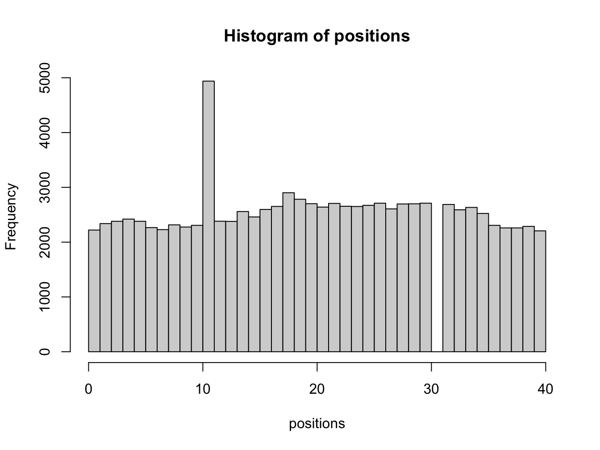
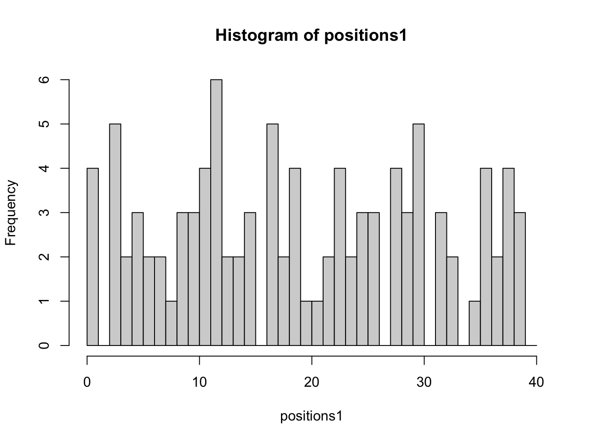
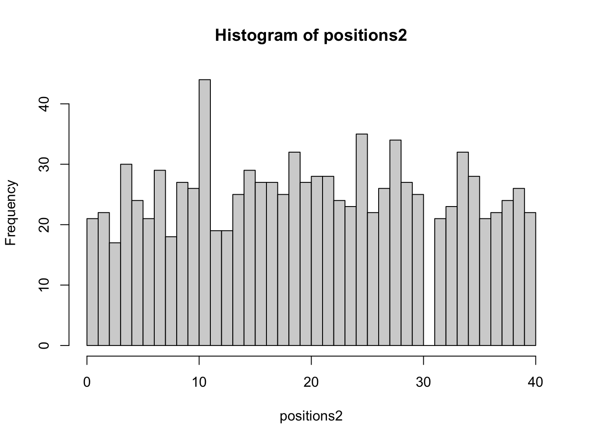
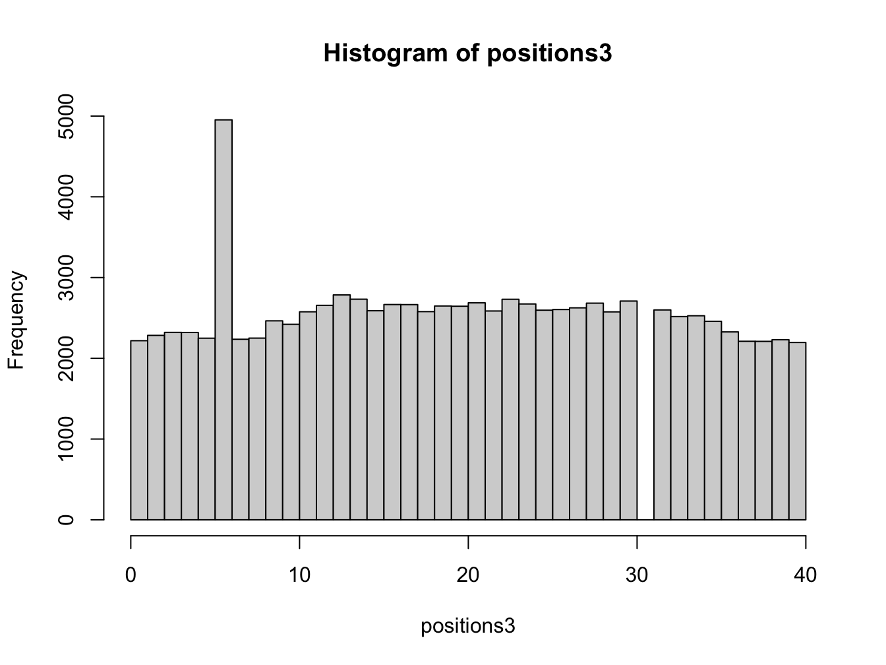
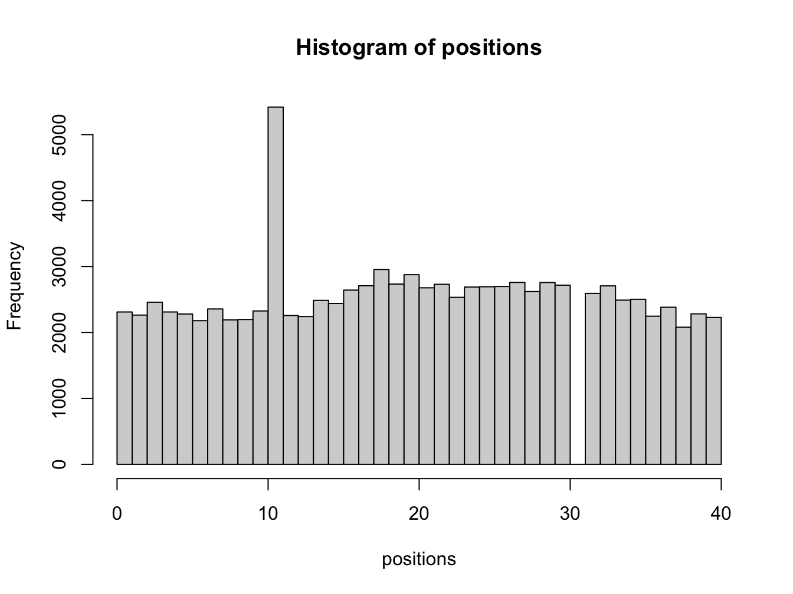
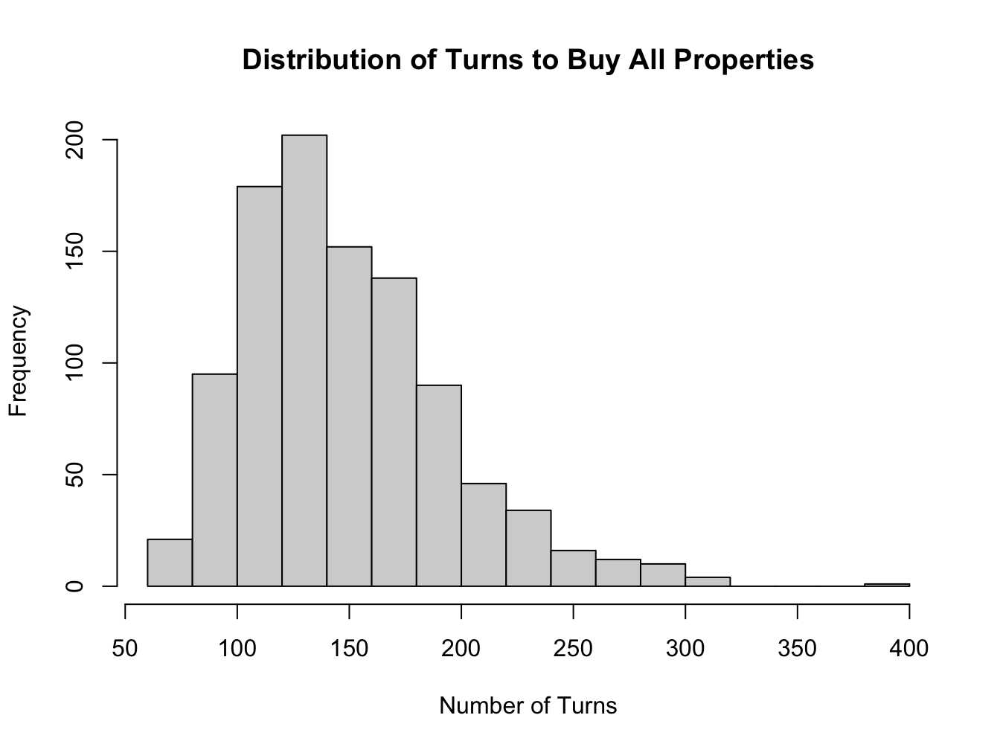

C Solution: Monopoly
C.1 Solution: Monopoly Function
monopoly_sim <- function(num_turns) {
current_board_position <- 0 # start on the GO space
go_to_jail_position <- 30 # the go to jail space
jail_position <- 10 # jail space
positions_visited <- rep(0, num_turns)
# use a for loop to simulate a number of turns
for (turn in 1:num_turns) {
# roll two dice
die_values <- sample(c(1:6), 2, replace = TRUE)
# move player position
# number of positions to move
plus_move <- sum(die_values)
# compute new board position
new_board_position <- current_board_position + plus_move
# if land on GO TO JAIL square, then go backwards to the JAIL square
if (new_board_position == go_to_jail_position) {
new_board_position <- jail_position
}
# update board position (this corrects for the fact the board is circular)
current_board_position <- (new_board_position %% 40)
# store position visited
positions_visited[turn] <- current_board_position
}
return(positions_visited)
}If you are using an Rmarkdown file it is better to put the function in a script file and then source the file. This way you can reuse the function in multiple files.
Best practices for organizing R code:
-
Create a separate R script: Save your function as
monopoly_functions.Rin the same directory -
Source the file: Use
source("monopoly_functions.R")at the top of your Rmarkdown document -
Alternative: Use
source(here::here("monopoly_functions.R"))for more robust file paths
Useful resources:
- R for Data Science - Functions chapter - Clear explanations with examples
- Advanced R - Functions - More detailed coverage for advanced users
- Posit Support - Using R Scripts - Managing R files and projects
If you have followed these steps, you would now have a working function that simulates a game of Monopoly for a specified number of turns and returns the positions visited during the game. To run it for a specific number of turns, you first need to source the file containing the function:
Only once you have sourced the file can you call the function, for example:
positions <- monopoly_sim(100000) # simulate 100,000 turns
hist(positions, breaks = seq(0, 40, len = 41), right = FALSE)
Note, to ensure this code works it is important to try different values for the input argument num_turns to ensure the function behaves as expected.
C.2 Going to Jail - function
monopoly_jail_sim <- function(num_turns = 100, jail_position = 10) {
current_board_position <- 0 # start on the GO space
go_to_jail_position <- 30 # the go to jail space
positions_visited <- rep(0, num_turns)
# use a for loop to simulate a number of turns
for (turn in 1:num_turns) {
# roll two dice
die_values <- sample(c(1:6), 2, replace = TRUE)
# move player position
# number of positions to move
plus_move <- sum(die_values)
# compute new board position
new_board_position <- current_board_position + plus_move
# if land on GO TO JAIL square, then go backwards to the JAIL square
if (new_board_position == go_to_jail_position) {
new_board_position <- jail_position
}
# update board position (this corrects for the fact the board is circular)
current_board_position <- (new_board_position %% 40)
# store position visited
positions_visited[turn] <- current_board_position
}
return(positions_visited)
}You can see that be adding the jail_position argument with a default value of 10, the function is more flexible. You can now call the function with just the number of turns, or specify a different jail position if needed. We have also added default value for num_turns to 100, so if you call the function without any arguments it will simulate 100 turns by default. Let us run the function without any arguments, and by choosing a different jail position, and different number of turns:
# simulate 100 turns with default jail position
positions1 <- monopoly_jail_sim()
hist(positions1, breaks = seq(0, 40, len = 41), right = FALSE)
# simulate 1000 turns with default jail position
positions2 <- monopoly_jail_sim(1000)
hist(positions2, breaks = seq(0, 40, len = 41), right = FALSE)
# simulate 100000 turns with jail position at 5
positions3 <- monopoly_jail_sim(100000, jail_position = 5)
hist(positions3, breaks = seq(0, 40, len = 41), right = FALSE)
Explain the results qualitatively.
C.3 Solution: Rolling three doubles
You can also go to jail, if you roll three doubles (both dice having the same value) in a row. Update your code to allow for the possibility of going to Jail with three doubles. How does the distribution of board positions change?
The best process is to add the new feature to the existing code. This way we can compare the results with and without the new feature.
monopoly_double_sim <- function(num_turns, jail_position = 10) {
current_board_position <- 0 # start on the GO space
go_to_jail_position <- 30 # the go to jail space
positions_visited <- rep(0, num_turns)
# use a for loop to simulate a number of turns
for (turn in 1:num_turns) {
# set double counter to zero
double_counter <- 0
# roll (max) three times
for (j in 1:3) {
# roll two dice
die_values <- sample(c(1:6), 2, replace = TRUE)
# if we have rolled a double for the third time, we proceed straight to jail
if ((die_values[1] == die_values[2]) && (double_counter == 2)) {
current_board_position <- jail_position
break
}
# otherwise
# move player position
# number of positions to move
plus_move <- sum(die_values)
# compute new board position
new_board_position <- current_board_position + plus_move
# if land on GO TO JAIL square, then go backwards to the JAIL square
if (new_board_position == go_to_jail_position) {
new_board_position <- jail_position
}
# update board position (this corrects for the fact the board is circular)
current_board_position <- (new_board_position %% 40)
# break out of loop if we roll a non-double
if (die_values[1] != die_values[2]) {
break
} else { # increment double counter
double_counter <- double_counter + 1
}
}
# store final position visited
positions_visited[turn] <- current_board_position
}
return(positions_visited)
}
# Example usage:
positions <- monopoly_double_sim(100000)
hist(positions, breaks = seq(0, 40, len = 41), right = FALSE)
Adding the rolling doubles feature doesn’t seem to change much. We might expect this since rolling three doubles is a very unlikely event!
Note, here we have created the function within the solution for clarity, but in practice, you would define this function in your script file as described earlier. Make sure you do that, you can also have multiple functions in one file, try that!
C.4 Solution: Monopoly Extension
For example, the following simple extension of the previous example adds some features to record properties being purchased. This simulation is constructed based on the assumption that a players always buys any free property that land on.
monopoly_ext_sim <- function(num_turns, jail_position = 10) {
current_board_position <- 0 # start on the GO space
go_to_jail_position <- 30 # the go to jail space
# vector of squares containing properties
properties_that_can_be_bought <- c(
1, 3, 5, 6, 8, 9, 11, 12, 13, 14, 15, 16,
18, 19, 21, 23, 24, 25, 26, 27, 28, 29, 31, 32, 34, 35, 37, 39
)
positions_visited <- rep(0, num_turns)
positions_purchased <- rep(0, 40)
properties_bought <- rep(0, num_turns)
# use a for loop to simulate a number of turns
for (turn in 1:num_turns) {
# roll two dice
die_values <- sample(c(1:6), 2, replace = TRUE)
# move player position
# number of positions to move
plus_move <- sum(die_values)
# compute new board position
new_board_position <- current_board_position + plus_move
# if land on GO TO JAIL square, then go backwards to the JAIL square
if (new_board_position == go_to_jail_position) {
new_board_position <- jail_position
}
# update board position (corrects for circular board)
current_board_position <- (new_board_position %% 40)
# if we land on a square that can be purchased and which has not been
# purchased (note R uses 1-indexing for arrays)
if (positions_purchased[current_board_position + 1] == 0) {
if (current_board_position %in% properties_that_can_be_bought) {
positions_purchased[current_board_position + 1] <- 1
}
}
# store position visited
positions_visited[turn] <- current_board_position
# store number of properties bought
properties_bought[turn] <- sum(positions_purchased)
# check if all properties are bought
if (properties_bought[turn] == length(properties_that_can_be_bought)) {
# truncate vectors to actual length used
positions_visited <- positions_visited[1:turn]
properties_bought <- properties_bought[1:turn]
break
}
}
# return a list with multiple pieces of information
return(list(
positions_visited = positions_visited,
properties_bought_timeline = properties_bought,
positions_purchased = positions_purchased,
turns_to_buy_all = ifelse(
max(properties_bought) == length(properties_that_can_be_bought),
length(positions_visited), NA
),
total_properties = length(properties_that_can_be_bought),
properties_available = properties_that_can_be_bought
))
}
# Example usage for a single game:
game_result <- monopoly_ext_sim(1000)
print(paste("Turns to buy all properties:", game_result$turns_to_buy_all))#> [1] "Turns to buy all properties: 129"#> [1] "Total properties bought: 28"# Example usage for multiple games to analyze distribution:
num_games <- 1000
time_to_buy_all_properties <- rep(NA, num_games)
for (game in 1:num_games) {
result <- monopoly_ext_sim(1000)
time_to_buy_all_properties[game] <- result$turns_to_buy_all
}
# Remove NA values (games where not all properties were bought)
time_to_buy_all_properties <- time_to_buy_all_properties[
!is.na(time_to_buy_all_properties)
]
hist(time_to_buy_all_properties, breaks = 20,
main = "Distribution of Turns to Buy All Properties",
xlab = "Number of Turns")
This code simulates 1000 games of Monopoly and records the number of turns it takes to buy all properties. The histogram shows the distribution of the number of turns it takes to buy all properties.
What is the distribution of the number of turns it takes to buy all properties?
Would it be possible to extend this simulation to include more features of the game?